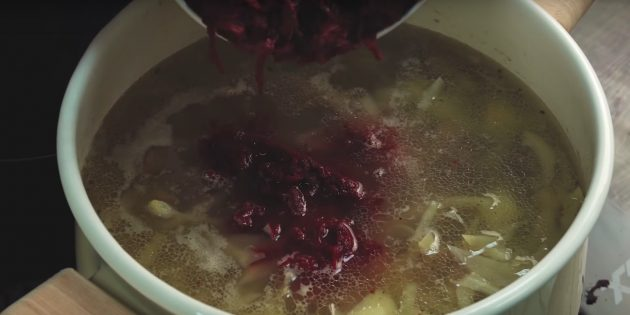

Как приготовить борщ по классическому рецепту
Сварить идеальный борщ может каждый.
В Киевской Руси борщ готовили из съедобных листьев борщевика — отсюда название. Позднее стали варить со свёклой, а с XIX века добавлять картошку.
Сегодня в каждой семье есть свой рецепт борща. В кастрюлю добавляют и фасоль, и грибы, и копчёности, и даже сельдерей. Мы же научим вас готовить идеальный традиционный борщ.
Ингредиенты
Для бульона:
- 1½–2 л воды;
- 400–500 г свинины или говядины на кости.
Для Зажарки:
- 2 небольшие свёклы;
- 1 средняя морковь;
- 3 средние луковицы;
- 4–5 столовых ложек растительного масла;
- щепотка лимонной кислоты, немного столового уксуса или ½ лимона;
- 2 столовые ложки томатной пасты.
Для борща:
- 300 г свежей белокочанной капусты;
- 4 средние картофелины;
- соль — по вкусу;
- 1–2 сушёных лавровых листа;
- зелень — по вкусу;
- 1 зубчик чеснока — опционально;
- щепотка молотой гвоздики — опционально;
- щепотка молотого чёрного перца — опционально.
Приготовление
Шаг 1. Сварите бульон
Налейте в кастрюлю холодную воду, выложите мясо и поставьте на средний огонь. Бульон будет вкуснее, если использовать именно мясо на кости.
Следите за бульоном, перед закипанием снимите пену.
Когда жидкость закипит, накройте кастрюлю крышкой и варите на медленном огне час-полтора.
Шаг 2. Сделайте зажарку
Вымойте и почистите свёклу, морковь и лук. Свёклу натрите на крупной тёрке, а морковь — на средней. Лук нарежьте небольшими кубиками.
Налейте масло в сковороду, включите средний огонь. Обжаривайте лук и морковь, помешивая, около 5 минут.

Затем выложите свёклу. Добавьте к ней лимонную кислоту, уксус или сок лимона. Благодаря этому борщ будет по-настоящему красным и приобретёт приятную кислинку.
Готовьте зажарку ещё 5 минут. После этого добавьте томатную пасту, перемешайте и оставьте на огне ещё на 5–7 минут.

Шаг 3. Соберите борщ
Когда бульон сварится, выньте из него мясо. Пока оно остывает, засыпьте в кастрюлю нашинкованную капусту. Через 5–10 минут добавьте нарезанный соломкой или кубиками картофель.
Порядок закладки овощей можно менять. Если капуста молодая, её лучше добавить уже после картошки. Ну или одновременно, если ваш сорт картофеля разваривается быстро.
Пока варится картофель, отделите мясо от кости и нарежьте кубиками. Верните его в суп. Посолите по вкусу.

Добавьте зажарку и перемешайте.
Закиньте лавровый лист и мелко порубленную зелень. Накройте кастрюлю крышкой и варите ещё 5–7 минут.

Для аромата можно добавить в кастрюлю немного измельчённого чеснока, молотой гвоздики или чёрного перца. Оставьте борщ под крышкой настаиваться 5–10 минут.